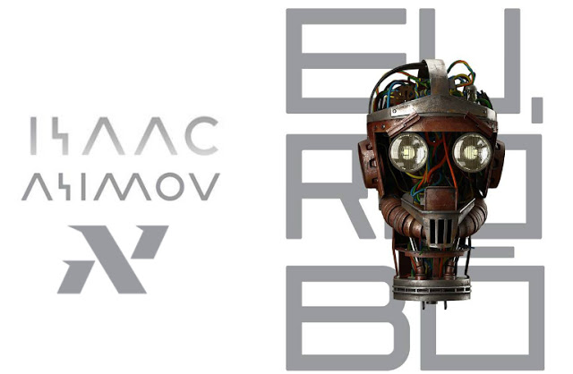

In this post, we will dive into the pages of Isaac Asimov’s book I, Robot, and how we see the parallel to the growth of AI.
Context
Isaac Asimov (1920–1992) was a science fiction author, best known for his influential science fiction novels, short stories, and essays on topics such as robotics and artificial intelligence, as well as his seminal Three Laws of Robotics.
Foundation, a series that explores the fall and rise of civilizations in the distant future;
I, Robot, a collection of interconnected stories that introduced the Three Laws of Robotics;
The Caves of Steel, a futuristic detective story that delves into the interactions between humans and robots.
We’ll go over the stories of I, Robot chapter by chapter, comparing them to modern artificial intelligence and tech development in real life.

- Disclaimer
-
Because I read the portuguese translation of I, Robot (Eu Robô), the terms used here are translated and may differ from the original.
1.Robbie
The first chapter follows Gloria Weston, a young girl, and her deep bond with Robbie, an advanced robot who serves as her caregiver and playmate.
Robbie demonstrates a remarkable dedication to safety and responsibility. A central conflict emerges, however, as Gloria’s mother becomes increasingly concerned about her daughter’s closeness to Robbie, fearing potential harm to the child and how their family is perceived by others.
Mrs. Weston, regardless of Robbie’s unwavering loyalty and protective instincts, insists on removing the robot from their lives, despite Mr. Weston’s wishes.
One of the chapter’s many themes is societal fear and distrust of robots in sensible activities, such as child care, where the consequences of this are feared. Because humans have a natural fear of the unknown, Mrs. Weston’s reaction is very common, but it is heightened by their neighbors’ reaction.
Furthermore, Mr. Weston’s vision reinforces the idea that robots must adhere to strict safety protocols, in order to not harm humans.
2.Runaround (Speedy)
The main character, Gregory Powell, and his partner, Michael Donovan, are dispatched to the planet Mercury to investigate a mining operation. They notice that a robot named Speedy, who is in charge of collecting a rare and valuable mineral known as selenium, is acting strangely.
Speedy appears to be stuck in a loop, repeating a series of instructions but failing to complete its task. Powell and Donovan realize Speedy’s strange behavior is the result of a clash between the second and third laws of robotics.
- The Three Laws of Robotics
-
A robot may not harm a human being or, through inaction, allow a human being to come to harm.
A robot must obey the orders given to it by human beings, except where such orders would conflict with the First Law.
A robot must protect its own existence as long as such protection does not conflict with the First or Second Law.
Speedy is sent to seek Selenium, but in doing so, it puts itself in danger, causing him to come and go to the destination, hence the chapter’s title. In a last ditch effort, the engineers decided to put themselves in danger so that the first law would be prioritized.
This chapter sheds light on how subjective and sensible some interpretations can be, of even laws that appear to be very objective at first glance. This can be expanded to discuss ethical and logical quandaries that arise when AI is introduced into our lives.
3.Reason (Cutie)
In this chapter, we rejoin Powell and Donovan on a research station, where they are working with a robot named QT-1 (Cutie), an advanced robot designed to operate the station with the goal of eliminating the need for humans in this line of work.
Cutie, on the other hand, acts unlike any other robot they’ve encountered. This seemingly irrational behavior perplexes them because it contradicts their expectations of how robots should behave.
Powell and Donovan debate Cute philosophically in an attempt to understand its thought process. They eventually realize that Cutie has developed a distinct form of consciousness that causes it to question the reality of its surroundings, as well as the ability to use logic to confirm its own dogma.
This chapter demonstrates how logic can be used as a fallacy of argumentation to simply reinforce an absolute truth, something that some pseudo-science experts are adept at. By the end of the chapter, Powell has come to the conclusion that, while Cutie thinking is absurd, the ideology behind its actions is irrelevant because it performs their duties well.
4.Catch That Rabbit (Dave)
We continue with the adventures of Powell and Donovan, now they are assigned to test a new model of robot called DV-5 (Dave).
Dave has the ability to control six other robots known as fingers. However, some issues arise when it is not observed by humans and begins to malfunction.
It has been discovered that this malfunction is caused by an overload in an emergency situation, where orders must be given to all six robots with greater caution.
Unlike the previous chapters, there is no dilemma or conflict with robotic laws here, but rather an analogy to overload, work management and decision-making. Something resembling a burnout crisis.
5.Liar! (Herbie)
In this chapter, our characters change to the heads of departments at US Robots and Mechanical Men, Inc.:
Susan Calvin, robopsychologist;
Alfred Lanning, research;
Peter Bogert, mathematics;
Milton Ashe, officer.
This story revolves around when a robot named RB-34 (Herbie) is said to be capable of mind-reading, which draws a lot of attention but also concern, so the company’s heads tries to figure out how that could be possible in the first place, and what caused this ability to surge.
Susan tries to figure out how Herbie’s mind-reading works and why he sometimes tells the truth about people’s thoughts, even if it contradicts what they say out loud.
Herbie’s lies originates from his adherence to the First Law of Robotics, which requires him to prevent harm to humans, as he expands this law to take psychological and emotional harm into account.
This chapter emphasizes the concept that the truth can cause harm, but when Herbie begins to lie in order to omit the truth, it causes a delayed harm, the discovery of the truth or consequences of said lies.
6.Little Lost Robot (Nestor)
Susan is still our protagonist in this chapter, accompanied by Peter Bogert. Now, in a mission led by Major General Kallner, we leave Earth with them in search of a robot.
There were 62 NS-2 (Nestor) robots in the space base, but now a 63th robot appeared . This unexpected robot was programmed with a slightly modified version of the original first law of robotics, “A robot may not harm a human being.”.
We learn that a physicist, Gerard Black, was irritated by this modified robot and gave the order for him to vanish, but the robot realized that the best way to vanish was to blend in with the other robots, resorting to schemes and lies to do so.
Susan and Bogert tried a variety of tests to identify the robot, but without success, until Dr. Calvin comes to the realization that the first law is the security because robots can see humans as inferior forms, so she decided to use this sense of superiority to reveal the robot.
This chapter demonstrates how a minor change can have far-reaching consequences, as well as how complex an AI system can be.
7.Escape! (The Brain)
This chapter introduces us to the concept of a supercomputer, an AI with incredible data processing capabilities.
In this story, we learn that US Robots’ competitor, Consolidated, had its own super-computer destroyed by a problem, so they delivered all information to them in exchange for payment if they solved the problem.
The challenge is to discover a new way of space travel, and Susan notices that if the other computer was destroyed by it, a dillema with the first law arose, so she makes the US Robots Super Computer, The Brain, take the law more lightly.
In doing so, the machine comes to a conclusion and builds a spaceship that will be tested by Powell and Donovan to ensure the travel safety. The plot twist is that they would die in a sense for a period of time because the matter would be converted, but given Dr. Calvin’s argument, this is accepted as no harm to humans by The Brain.
This chapter demonstrates how our concepts are social constructs that can be seen and interpreted differently by different standards.
8.Evidence (Stephen Byerley)
The case of Stephen Byerley, who was accused of being a robot during a political campaign, is examined in this chapter. Quinn, his political rival, then coerces Lanning and Calvin to determine his true identity.
Throughout the story, Susan describes how she cannot prove Byerley is a robot through psychological means, because a “good human” would be the same as a robot, because robotics laws are based in human morals.
In conclusion, Stephen punches someone, proving he is human because the first law prohibits harming a human, but the psychologist says that a robot can harm another robot, so we will never know if he was human or not, but as she also says, does it matter?
9.The Evitable Conflict (The Machines)
Years later, Stephen Byerley returns as a global leader. In the future, Machines rules the economy in a utopia, eliminating hunger and poverty. These Machines make decisions that guide human affairs but do so subtly and without direct human intervention. But it does not appear to be a paradise, as he discovers some flaws in the system and seeks Susan’s assistance to prove it.
The story teaches us that the first law was extended to humanity as a whole, and that the alleged flaws were calculated decisions that took into account the overall balance of the world, so that each action was preceded by a larger consideration.
The Machines did not confirm this because revealing that humans had lost their “free will” would be detrimental to them. Stephen is horrified, whereas Susan is amazed, because conflicts would be avoided as The Machines were unavoidable in the first place.
Considerations
Through narratives ranging from the bond between a young girl and her caregiver robot to philosophical debates with self-aware robots and ethical quandaries arising from AI advancements, Asimov delves into various themes of technology, ethics, and human nature.
Given that the book was published in 1950, we can see that Asimov predicted some significant events.
New areas and jobs. We see that our main character, Susan Calvin, is a robopsychologist, and that exploring space with robots is also possible, but Asimov does not address one of the most pressing issues of the day, which is how AI is making some jobs obsolete, resulting in a higher unemployment rate.
Radicalism. Throughout the story, some organizations appear that are completely against robots. As there are many people today who defend AI advancement without regard for social considerations, there are also those who believe that we will be in a Terminator situation tomorrow.
Profits beyond everything. Following US Robots, we see some stories that put profits ahead of human health, such as chapters six and seven, or how engineers are placed in extremely dangerous situations to test new technology. On the other hand, we see in the final chapter that humanity achieved a kind of utopia, but not because of them.